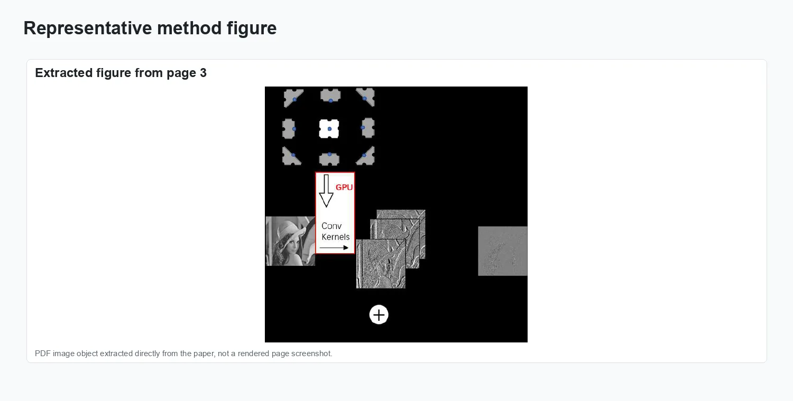
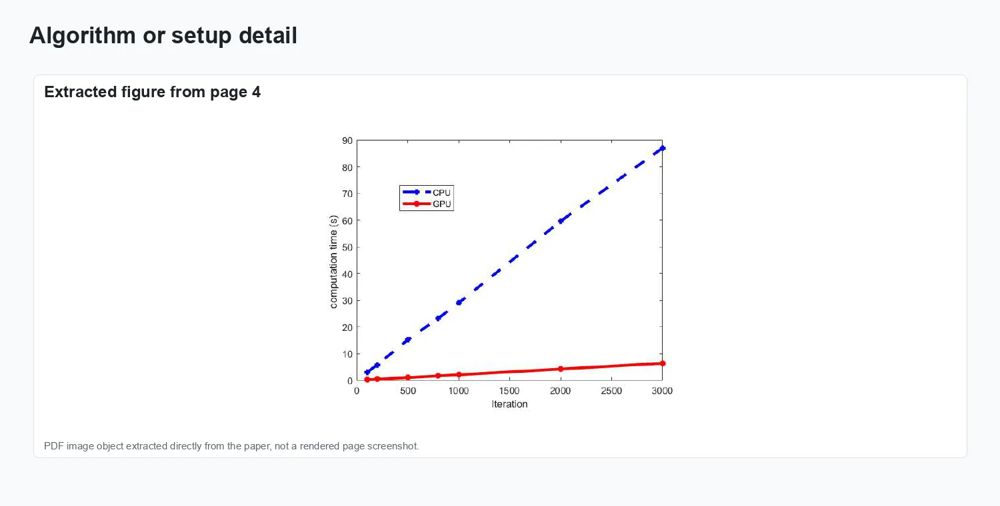
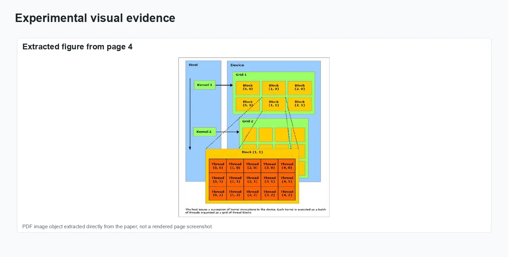
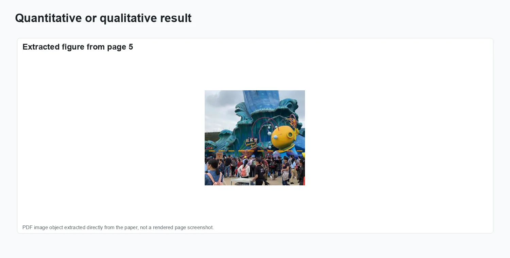

Parallel Curvature Filter for High Performance Image Processing

Recently, curvature filter (CF) has been developed to implicitly minimize curvature for image processing problems such as smoothing and denoising. In this paper, we propose a parallel curvature filter (PCF) that performs on GPU which is much faster than the original CF on CPU. Inspired by Convolution Neural Networks processed by GPU, the convolution operations in curvature filter computation can be similarly paralleled by GPU so that the PCF on a single GPU can process 33.2 Giga pixels per second.
Problem setting
Recently, curvature filter (CF) has been developed to implicitly minimize curvature for image processing problems such as smoothing and denoising. In this paper, we propose a parallel curvature filter (PCF) that performs on GPU which is much faster than the original CF on CPU. Inspired by Convolution Neural Networks processed by GPU, the convolution operations in curvature filter computation can be similarly paralleled by GPU so that the PCF on a single GPU can process 33.2 Giga pixels per second.
The figures below collect representative visual evidence from IWAIT 2019, vol. 11049 (SPIE), 282–287.
Method and visual evidence
The visuals show the GPU-parallel curvature-filter stencil and speed/quality comparisons for image smoothing and denoising.

Method overview.

Representation and setup.

Experimental evidence.

Result comparison.
Additional visual result.
Results and impact
The evaluation reported in IWAIT 2019, vol. 11049 (SPIE), 282–287 is summarized through the figures above.